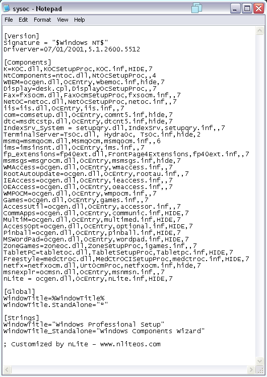
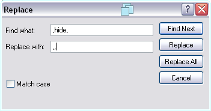
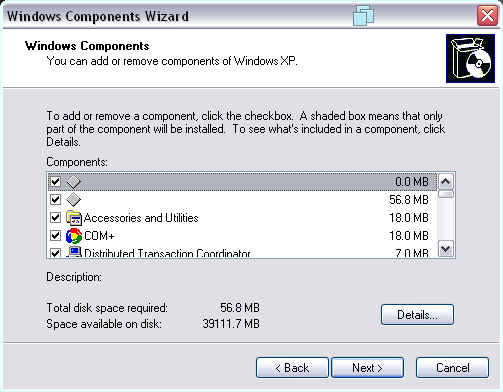

Windows XP lets you add and remove optional components to the system, however some of them are normally hidden. This will let you unhide them.
Note: This also works on Windows 2000, Windows Server 2003/2003 R2, XP betasFirstly, open the Run dialog, either by pressing Windows + R or pressing Start and going to Run
Then, type in c:\windows\inf\sysoc.inf
In Windows 2000, type c:\winnt\inf\sysoc.infAfter executing this command, you should see a Notepad window that looks like the one below
Now, go to Edit > Replace and in the Find what field type in ,hide, and in the Replace with field type in ,,
It should look like the screenshot below
Now, press Replace All.
After that, you can save the file
Now, when you go to add/remove optional components you should see options that weren't there before
